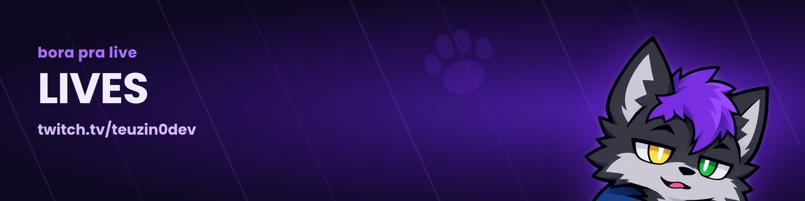

Bora uivar!
manda no chat da live
As lives são na Twitch, em twitch.tv/teuzin0dev. Tem jogo, programação e muita zoeira, sempre em português.
Avisos e conversa do dia a dia ficam no Discord da matilha.
Meta atual
Quero uma câmera e uma luz novas pra melhorar a qualidade das lives. Se quiser ajudar, dá pra apoiar pela LivePix. Ajuda muito, mas só de aparecer na live já ajuda também.
O visual
O overlay inteiro eu monto no OBS, tudo em roxo e com o Teyo em todo lugar: alertas, metas, tela de começo, pausa e encerramento. Esse site usa as mesmas molduras.